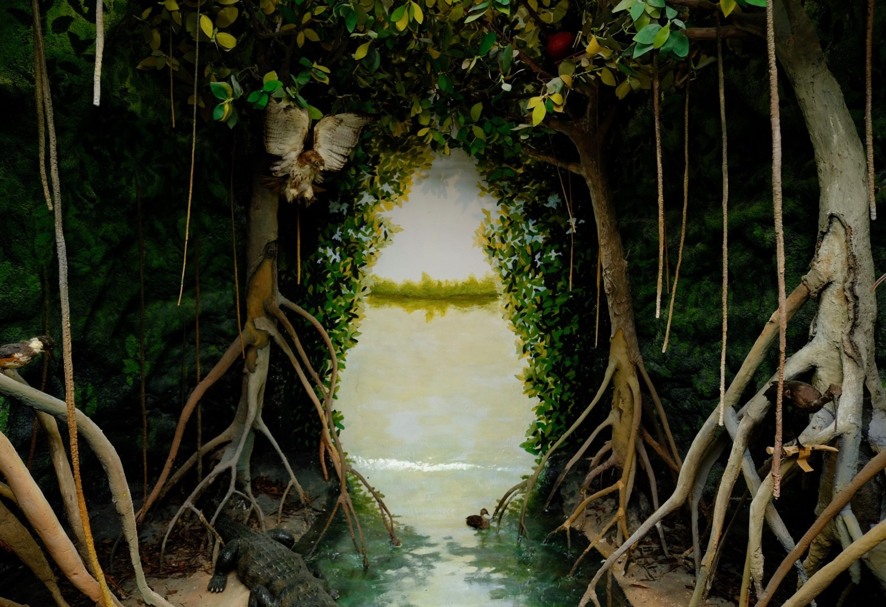
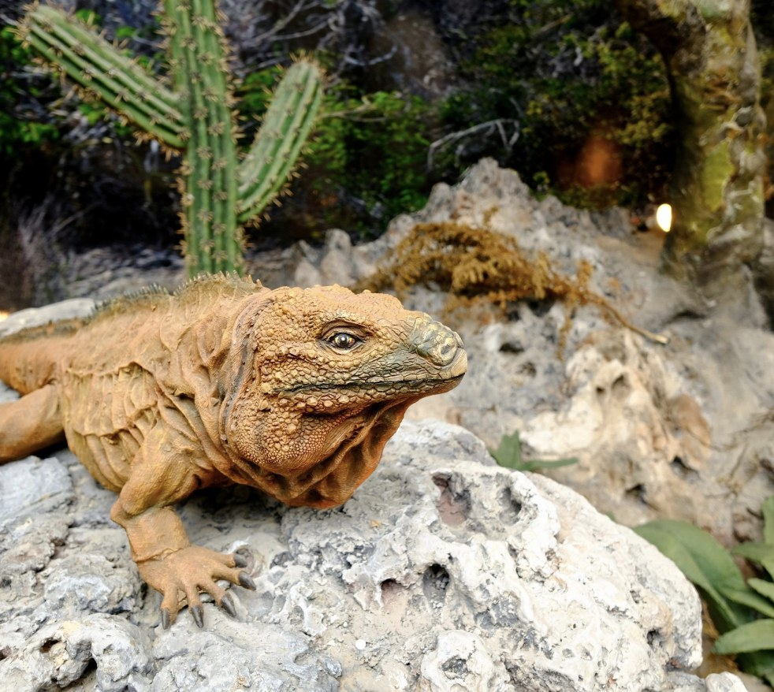
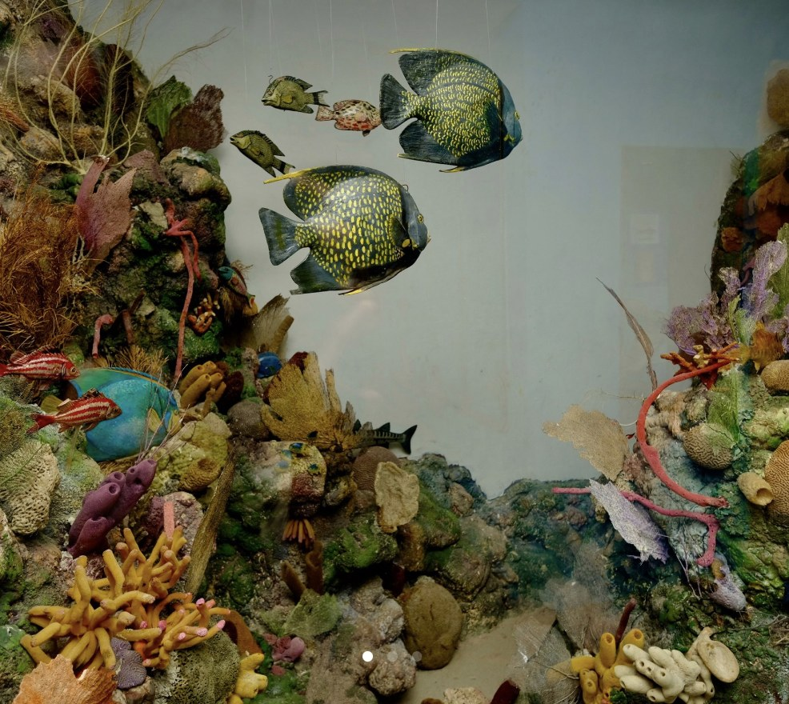
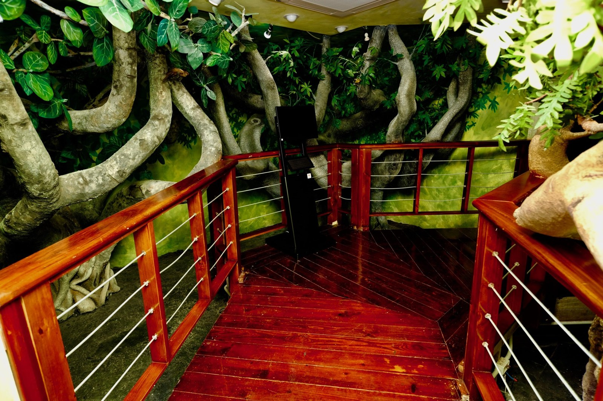

Museum · Immersive Environment · Kingston, Jamaica
Natural History
Museum of Jamaica.
Sculptural environments created to make Jamaica's ecosystems feel tangible — from limestone caves and coral reefs to mangrove wetlands and forest canopy.
The project
Nature,
recreated indoors.
The permanent exhibition gallery contains six environmental dioramas. Scheed researched specimens with botanists and zoologists, visited natural habitats, made drawing studies, sculpted forms by hand, moulded selected pieces, painted them and installed them in the museum.
The lifelike pieces were created using 360RM, a recycled composite developed by 360 Recycle Manufacturing.

Environments
Six ways into
Jamaica's natural world.
Geology
A sculptural environment inspired by Jamaica's limestone caves.
Coral Reef
An immersive representation of a thriving Jamaican reef ecosystem.
Wetlands
Mangrove roots and shoreline habitats recreated in three dimensions.
Dry Limestone
Inspired by the distinctive ecology of the Hellshire Hills.
Canopy
The colour and birdlife of Jamaica's upper forest environment.
Understory
A view into the life beneath a wet limestone rainforest canopy.
Inside the exhibition
Habitats brought to life.



Behind the work
Thousands of leaves had to be made to bring these habitats to life. Behind the finished gallery was a year of field studies, sculpting, mould-making and installation.
Explore the process
A year of making nature
Creating the museum’s sculptural environments took approximately a year. The challenge was to make six different habitats convincing, from the exposed forms of a limestone cave to the dense layers of a forest.
Research before sculpture
Cole worked from architectural drawings and guidance from the museum’s botanist and zoologist. Visits to natural habitats and drawing studies helped him understand the specimens: their forms had to be studied before they could be rebuilt.
Thousands of leaves, made by hand
One of the most demanding tasks was producing the thousands of leaves that fill the exhibition. Some forms were sculpted directly inside the museum; others were moulded so that copies could be made. Painting and installation brought those separate pieces together into complete environments.
A recycled material with a different appearance
The lifelike pieces were made using 360RM, the recycled composite associated with 360 Recycle Manufacturing. In the finished gallery, the material becomes bark, roots, foliage and animal forms rather than announcing itself as discarded waste.
More than a backdrop
The dry limestone environment draws on the Hellshire Hills, while other sections explore mangrove wetlands, coral reefs and the layers of a wet limestone rainforest. Cole’s sculptural contribution supports the museum’s wider purpose: helping visitors recognise Jamaica’s biodiversity and understand why it matters.
Based on Paul H. Williams’s Gleaner profile, “Scheed Cole behind the magic at Natural History Museum exhibition gallery”, reproduced in the artist’s dossier. See the article in Press below.
Museums & environments